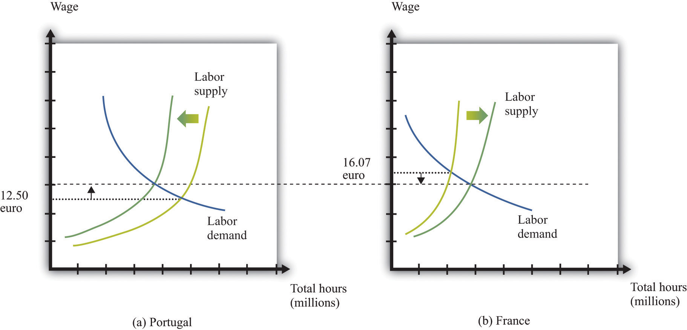
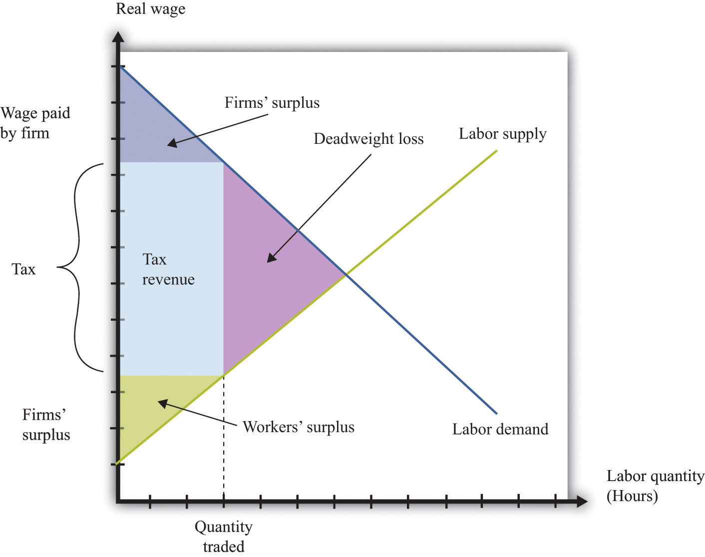

Some of the most important sets of markets in the economy are those for different kinds of labor. There are many ways in which governments intervene in these markets.
Toolkit: Section 31.3 "The Labor Market"
You can review the labor market in the toolkit.
Some occupations cannot be carried out without licensing or accreditation of some kind. You cannot set up in business as a doctor or a lawyer without any training. Here, the government’s reason for intervening is because of information problems: we do not have the knowledge to determine if someone is indeed trained in medicine or law.Chapter 16 "A Healthy Economy" has more to say about this.
Other things equal, people want to move to where they can earn a high wage. Within the United States, people are free to move from state to state in search of good jobs and good wages. Workers are likewise free to move among the countries of the European Union. In both places, we see many examples of people moving to where wages are higher. Young Polish students move to the United Kingdom in search of work; workers in Louisiana move to Washington state because wages are higher there. Obviously, many factors influence where people choose to live and work, but wages are one of the most important.
If a firm is willing to pay a worker $15 per hour in New Jersey but firms in Idaho will pay that same worker only $12 per hour, then this is an indication that the worker’s time is more valuable in New Jersey than it is in Idaho. The market, through the higher wage, sends a signal to the worker that it is desirable to move. The movement of workers from Idaho to New Jersey will cause the supply curve of labor in Idaho to shift to the left, so wages in Idaho will increase, and the supply curve of workers in New Jersey to shift to the right, so wages in New Jersey will decrease. The movement of workers thus also serves to make wages more equal.
Workers in the United States are permitted to move anywhere in the country. The same is true for workers in New Zealand, Mexico, and most other countries. In some places, however, laws enacted by national or local governments make such migration harder. In China, certain government benefits are highly localized, making it difficult for a worker to move from one town to another.
In a world with no restrictions on labor movement, workers would move across countries as they do within a country. Consider the market for labor within the European Union. Figure 12.16 "Migration Eliminates Wage Differences" shows the markets for workers in Portugal and France. If labor is unable to migrate, then the equilibrium wage in France is higher than the wage in Portugal. Once labor mobility is allowed within Europe, workers naturally move to the labor market with the higher wage. This forces wages to decrease in France and increase in Portugal.
Figure 12.16 Migration Eliminates Wage Differences
Workers move from Portugal to France in search of higher wages.
If workers care only about wages, then migration would completely equalize wages in France and Portugal. In practice, some differences in wages persist. For example, if most people think living in Portugal is better than living in France, then the wage rate in Portugal will be lower than that in France. Despite this wage differential, individuals living in Portugal will not move to France. The higher wage is France is an example of a compensating wage differentialThe amount in excess of the normal wage paid to compensate a worker for undesirable aspects of a job.: it is the difference in wages needed to compensate individuals for living and working in France.
Free migration across countries exists in the European Union, but international migration is typically much more restricted. One of the items on our shopping list at the beginning of the chapter was the hiring of an illegal domestic worker. This is yet one more example of a restriction on trade because people are not allowed to work wherever they want. Most countries restrict the amount of immigration permitted into the country; some countries restrict emigration as well.
Governments also affect the labor market through the imposition of taxes. In most countries, there is an income tax. In some cases, income taxes may also be imposed more locally: some individual states within the United States have an income tax in addition to the federal tax. An income tax works like the taxes we saw earlier. Fundamentally, it means that the amount paid by the employer exceeds the amount received by the worker. Exactly as before, this gives rise to a deadweight loss. Some workers will choose not to work or work fewer hours because of the tax. It follows that some mutually beneficial transactions go unrealized.
Because the market for labor is so fundamental to the economy and because the income tax is, in most economies, a major source of revenue for the government, economists and politicians pay a lot of attention to this market. Figure 12.17 "The Effect of an Income Tax in the Labor Market" summarizes the effects of a tax on wages using a diagram of the labor market. When there is a tax on wages, there is a gap between the wage paid by the firm and the wage received by the worker. As shown in the figure, the effect of the tax is to reduce the quantity of labor traded. The wage paid by the firm is higher than the wage in the original equilibrium, and the wage received by the worker is less than the wage in the original equilibrium.
Figure 12.17 The Effect of an Income Tax in the Labor Market
An income tax means that there is a wedge between the wage paid by the firm and the wage received by a worker.
As in our earlier example, the incidence of the tax will depend on the elasticity of labor supply and labor demand. We can understand incidence by looking at how the tax on labor income affects the wage. If the wage paid by the firm increases by the amount of the tax, then the firm is paying the tax. This will happen if the demand for labor is very inelastic. If the wage received by the worker decreases by the amount of the tax, then the worker is paying the tax, not the firm. This will happen if the supply of labor is very inelastic.
In some countries, governments have difficulty collecting income taxes from their citizens. This is partly an enforcement issue: if many people in a country misrepresent their income, it is difficult to hire enough people to enforce the tax laws. In this case, income taxes become ineffective, and governments resort to other forms of taxation, such as sales taxes.
Another form of tax evasion is to conduct trades in the underground economy. When income taxes are very high, small business owners and other individuals may offer to do work “under the table.” They will ask to be paid in cash, so there is no record of the transaction and no basis for collecting income tax. In return, they will do the work for a cheaper price. This is illegal, but the likelihood of getting caught is low enough that many people decide that avoiding the income tax is worth the crime. The magnitude of this underground activity can be substantial: “In a report to the Senate in May, Deputy Finance Minister Vincenzo Visco said that the hidden, untaxed economy accounted for around 27 percent of Italy’s gross domestic product of nearly $2 trillion.”Elisabetta Povoledo, “Italy Changes Rules of Tax-Evasion Game,” New York Times, June 13, 2007, accessed January 29, 2011, http://www.nytimes.com/2007/06/13/world/europe/13iht-taxes.4.6129007.html?_r=1.
Thus there are two different aspects of the underground economy. There is the exchange of goods and services that cannot be traded legally (drugs, scalped tickets, etc.). And there are trades that are legal but not reported to the tax authorities (illegal).
The underground economy tends to be larger when income taxes are higher and where tax enforcement is difficult, but it exists everywhere. If your neighbor pays you $20 to mow his lawn, and you do not declare this on your taxes, you are participating in the underground economy. Besides allowing you to avoid income taxes, working in the underground economy has an additional benefit. If you do not work a regular job, then you can collect unemployment insurance. This means that you can work and earn income without paying taxes in the underground economy and also collect unemployment insurance.
A recent study by the International Monetary Fund (IMF) concluded, “In the European Union in the late 1990s, 20 million people engaged in shadow [underground] economy activities. In all European OECD countries combined, about 35 million people did so. In some individual countries, the shadow economy labor force was very large: in Italy, 30–48 percent of the total labor force (1997); Spain, 12–32 percent (1997–98); and Sweden, 20 percent (1997–98). In many countries, these high shares coexisted with high official rates of unemployment.”Friedrich Schneider and Dominik Enste, “Hiding in the Shadows: The Growth of the Underground Economy,” International Monetary Fund, March 2002, accessed January 29, 2011, http://www.imf.org/external/pubs/ft/issues/issues30. According to this study, the underground economy is between 35 percent and 44 percent of gross domestic product (GDP) in developing countries and around 15 percent in the advanced Organisation for Economic Co-operation and Development (OECD) countries.
Finally, people sometimes barter goods and services rather than trade them. If you are a web designer and your next-door neighbor is a plumber, you might agree to build a website for her in exchange for her installing a new shower for you. Again, if you fail to report this “income in kind,” you are evading taxes. Bartering schemes can be very sophisticated, involving the creation of groups that set up their own special money to pay for transactions.